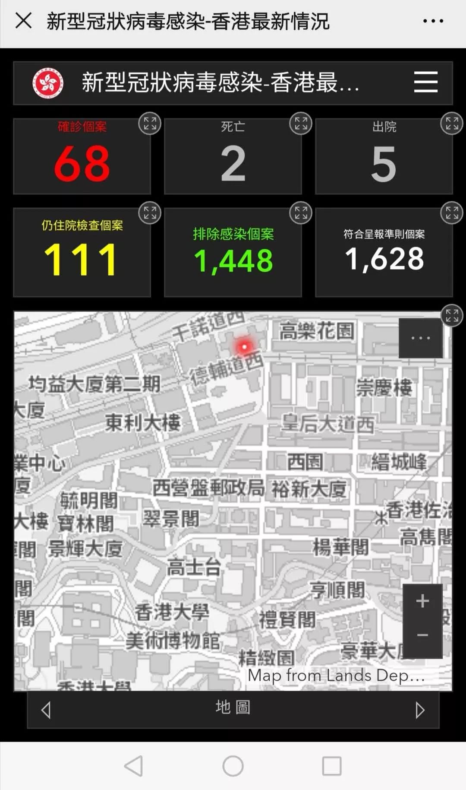
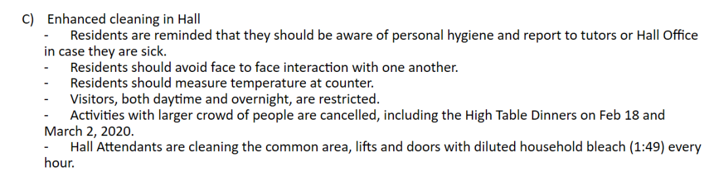
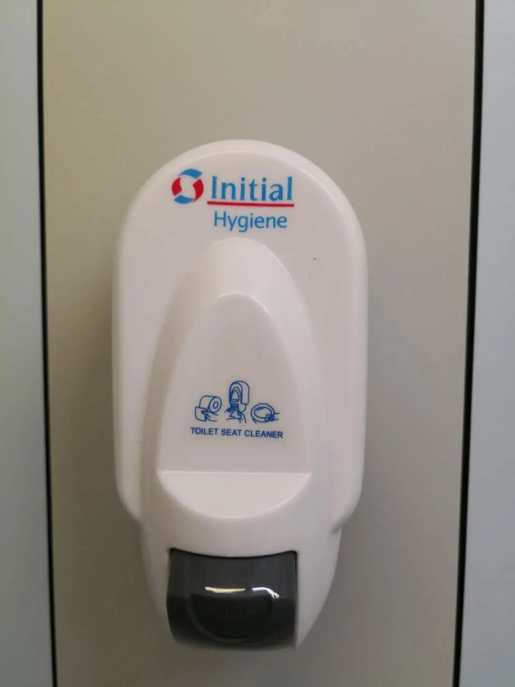
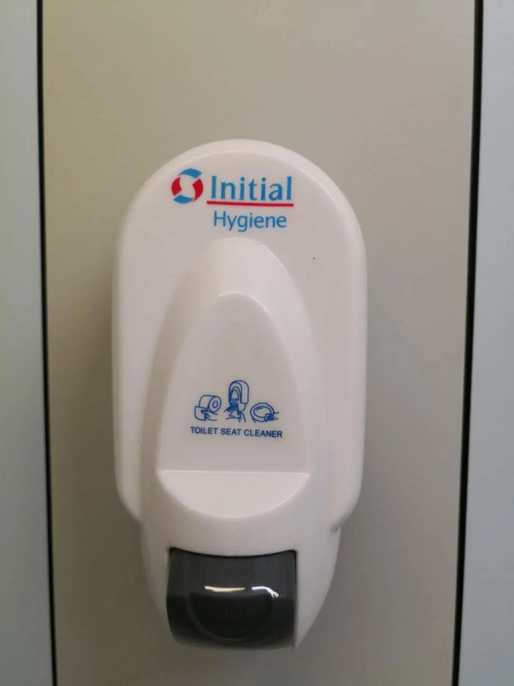
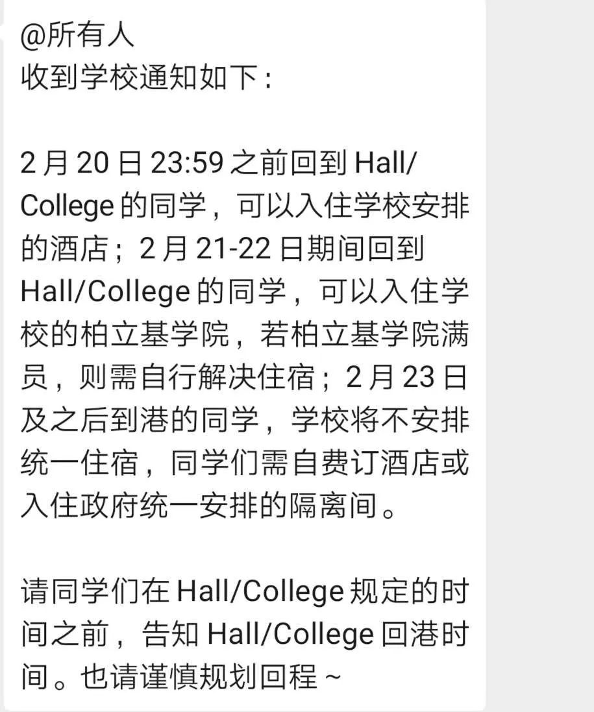

杂忆与杂写| 香港 我 除夕的隔离室
原文链接 备份链接 当社会规则的制定者不作为的时候，普通人别无选择，“幸运”的人躲过一劫，只从人性百态里掠了个影；而“不幸”的人却只能自面生死。武汉肺炎等事情不使人绝望，真正使人绝望的是这些看似由于客观因素所导致的不幸里面，大多数是本可以 …
上一篇文章提到港大要求内地学生回到香港后进行14天自我隔离才能返回宿舍和校园，而当时学校没有明确解决隔离住所和吃饭这些问题。这一篇文章来记录学校和港府后续的措施。我对学校确实有很多不满意的地方，但是我也意识到，在针对个人权益方面，同比内地某些管理者，香港高校和政府办事还是比较人性化的，它能够听到你的意见，也能够后续为改善你的处境做出帮助-—不过你要主动发言，主动说我要什么什么；沉默的人什么也得不到。
香港政府对病情的重视主要体现在信息公开以及强制隔离措施这两点。通过香港政府的网址可以随时看到最新的病情数据和病情地图，地图上红点就是指确诊案例近期的住所，能够具体到某街道某号某大厦。（对笔者而言，这段距离实在是令人担忧） 
至于强制隔离，从2月8日起港府对所有从内地返回到香港的人士进行强制隔离，且禁止持有旅游签证（仅7天人士）入境，也就是说只有拿着香港居民身份证（大学生）/永久身份证的人才能回来。过海关的时候，在测量体温填写表格以后，最重要的一个步骤是加whatsapp, 因为在后续14天里隔离人士有义务接受随时的突击检查，并且随时通过whatsapp定位的方式向控制中心的政府人员报告自己的位置，确保自己每天只在隔离的房间/酒店里待着。这个住址是取决于个人的，如果你在香港有住所，比如租了房子，那么你有可能是被要求回到租房中隔离，一日三餐会有福利署的人免费给你送饭，送一些物资（体温计等等）；也有可能是入住政府安排的度假村(无住所人士）；最后一种就是由所在学校/公司安排入住香港的酒店进行隔离。


上述三种方式里，最稳妥的肯定是酒店隔离，因为租房仍有集聚的可能性，而度假村并不能保证单人间的隔离条件。在这一点上讲，港大做得比较好，为2月20日之前从内地返港的学生都安排了三星到四星的酒店单人间进行隔离，在携程看这些酒店一晚的价格大概500~700不等。而一日三餐也是有专门人员送上门来，且酒店楼下有负责审查出入学生的人，确保大家都踏踏实实待在屋子里，不出去给别人添乱。只不过这些安排落实到个人身上，仍是免不了一顿兵荒马乱的日子，比如隔离期间手机停机了却又去不了柜台，从内地穿回来的羽绒服放了14天没地方洗，送饭的人送晚了，担心酒店里面的中央空调把别人的飞沫吹到自己的屋子里等等。
14天的隔离期结束以后，这些内地学生就可以回到自己在学校的宿舍。但是宿舍内部也是有一些要求的，比如所有进入宿舍的同学都要接受体温检查，宿舍以外人员一律不得入内等等。这些管理手段和内地的小区比较相像，就不多说了。

值得一提的是宿舍的日常清洁工作做得很好，以我所在的宿舍为例，每天隔一小时会有基本的清洁消毒，早上以及中午会各有一次卫生间的消毒打扫，每天的厨余垃圾会有本层专门负责卫生的阿姨（我们通常叫她金姐）处理。除此以外，每层学生宿舍的电梯旁边会有一个酒精凝胶洗手液，用按压泵头取酒精洗手。在洗衣房、公共空间以及大堂这三层，安装另一种不需要按压，自动喷出酒精洗手液的仪器。而每层的厕所，则有一个用来给马桶盖消毒的仪器，在上厕所之前，可以用它擦拭周边。
 

上述的同学经历其实是很好的了，因为实际上还有很多困在湖北的学生。而且学校声明只能够为2月22日之前回来的同学提供免费的住所，后续再回到香港要进行隔离的学生就需要自费解决，等到那时，对于那些好不容易从湖北回到香港的同学而言，恐怕又是另一个难题。
就先记录到这里了，我要去看网课了。希望大家都平平安安。
原文链接 备份链接 当社会规则的制定者不作为的时候，普通人别无选择，“幸运”的人躲过一劫，只从人性百态里掠了个影；而“不幸”的人却只能自面生死。武汉肺炎等事情不使人绝望，真正使人绝望的是这些看似由于客观因素所导致的不幸里面，大多数是本可以 …
原文链接 备份链接 这些患者再次发病的时间、病程和就诊难度各异，但他们至今不清楚，自己是“复发”还是没有被治愈？他们曾被计入治愈出院的统计病例中，而突发的症状和重新检测结果意味着，他们实际上没有被彻底治愈。 文 |《财经》记者 房宫一柳 …
原文链接 备份链接 “我要承担自己的责任，好好照顾家人，把这个家像捏面粉一样捏起来。” 全文5358字，阅读约需10.5分钟 2月13日，余华离开医院、回到家中，多日未相见的女儿想念妈妈，张开双手要一个抱抱，余华硬下心肠拒绝了——这个拥 …
原文链接 备份链接 总体而言，港人对待疫情，后来就没有内地那么紧张了。我妈妈讲，她觉得作为一个香港居民，自己最大的感受是彷徨。她抱怨道，在香港，没工开等于没饭吃了；公司起先通知放假到24号，何时复工再议，而现在仍然是等通知的状态。 …
原文链接 备份链接 岛语 非常时期，武汉成了全国人民挂念、祈福的城市。封城后，武汉人民的真实生活是什么样？ 武汉在发生哪些变化？ 正和岛自1月26日起特别推出“叶青专栏”。叶青是一位定居武汉40年的市民，也是一名学者和官员。在过往多期的专 …